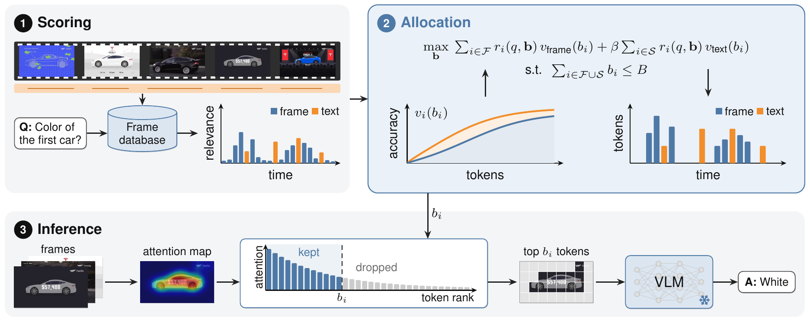

Efficient Video Retrieval Augmented Generation via Token Allocation
Preprint, under review
1University of Illinois Urbana-Champaign (UIUC), †Equal advising

In short
This paper introduces Lembas, a plug-and-play method that makes long-video understanding with vision-language models (VLMs) more accurate for the same compute. Video retrieval-augmented generation (RAG) systems choose which frames and subtitles to give the model, but they do not ask how much each extra token is worth. Lembas treats this as a budgeting problem: it splits one shared token budget across frames and subtitles, using the fact that each extra token on the same item helps less, and that tokens spent on evidence similar to what is already included help even less. It solves this with an iterative water-filling algorithm that provably converges. In multi-turn conversations, Lembas reuses the tokens processed in earlier turns and uses the VLM's own attention to refine what is relevant, at no extra cost. Lembas improves accuracy by up to 7.2 percentage points over state-of-the-art baselines at comparable compute, and on multi-turn video understanding it reaches up to 1.5 points higher accuracy with 1.7–17.3× fewer TFLOPs.
Abstract
Efficient long-video understanding requires identifying relevant evidence while minimizing the tokens processed by vision-language models (VLMs). Existing video retrieval-augmented generation (RAG) methods rely on frame selection and token compression, but overlook how much each additional token is worth. We introduce Lembas, a plug-and-play framework that formulates video RAG as a token allocation problem over frames and subtitles under a shared budget. Our key insight is that the value of a token diminishes within each item and decreases further as similar evidence receives more tokens. Lembas captures both effects in a single objective and solves it with an efficient iterative water-filling algorithm that has a provable convergence guarantee. For multi-turn conversations, Lembas reuses the tokens processed in earlier turns and refines relevance with the VLM's attention at no extra cost. Our evaluations show that Lembas improves accuracy by up to 7.2 percentage points over state-of-the-art baselines at comparable compute. On multi-turn video understanding, Lembas achieves up to 1.5 percentage points higher accuracy with 1.7-17.3x fewer TFLOPs.
Citation
@article{barik2026efficient,
title={Efficient Video Retrieval Augmented Generation via Token Allocation},
author={Ayush Barik and Fan Lai and Francis Yan},
journal={arXiv preprint arXiv:2611.32938},
year={2026}
}